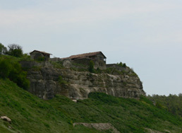
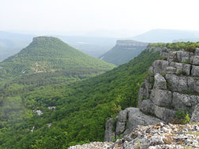
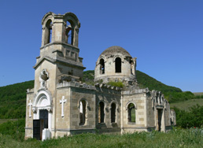
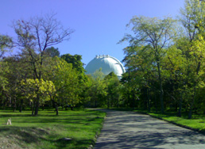
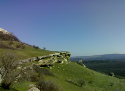

<div id="divLeft">

    <h1>ВЕЛОСИПЕДНЫЕ ТУРЫ</h1>
    <div class="divGreen">
      Большое развитие в последние годы получает туризм, связанный с историей и религией, восстанавливаются христианские церкви и монастыри, мусульманские мечети.<br/>
      Бахчисарайский район является центром исторического наследия Крыма. Живописные места, где расположены «пещерные» города и монастыри находятся в стороне от 
      популярных туристических маршрутов и смогли сохранить свой средневековый облик. 
      Особенности ландшафта этого уголка Крыма, отличным образом подходят для катания по бездорожью на горном велосипеде. 
    </div>     

    <h1>Маршрут 1</h1>
    <p>

      <strong>Местность:</strong> окрестности Бахчисарая <br>
      <strong>Уровень сложности:</strong> легкий <br>
      <strong>Длительность:</strong> 1 день <br>
      <strong>Расстояние:</strong> 15 км<br><br>

      Выезд на маршрут. Подъем через долину Биюк-Ашлама к пещерному городу Чуфут-Кале. Осмотр средневекового города. 
      Спуск по Иосафатовой долине (Караимское кладбище). Осмотр пещерного Свято-Успенского мужского монастыря. Спуск в Старый город.
    </p>

    <div class="divBreak" style="margin-bottom: 11px;"> </div>

    <h1>Маршрут 2</h1>    
    <p>

      <strong>Местность:</strong> окрестности Бахчисарая <br>
      <strong>Уровень сложности:</strong> средний <br>
      <strong>Длительность:</strong> 1 день <br>
      <strong>Расстояние:</strong> 20 км<br><br>

      Выезд на маршрут. Переезд   к подножию   пещерного города Тепе-Кермен. Осмотр средневекового городища. 
      Подъем по Безымянному ущелью на плато. Спуск по ущелью Таш-Аир к пещерному монастырю Качи-Кальон. Возвращение на базу.
    </p>

    <div class="divBreak" style="margin-bottom: 11px;"> </div>

    <h1>Маршрут 3</h1>    
    <p>

      <strong>Местность:</strong> окрестности Бахчисарая <br>
      <strong>Уровень сложности:</strong> сложный <br>
      <strong>Длительность:</strong> 1 день <br>
      <strong>Расстояние:</strong> 40 км<br><br>

      Выезд на маршрут. Переезд по Качинской долине через геологический заказник. Подъем к греческому храму в Лаки. 
      Переезд к живописным горным озерам. Спуск в деревню Баштановка. Возвращение на базу.
    </p>

    <div class="divBreak" style="margin-bottom: 11px;"> </div>

    <h1>Маршрут 4</h1>    
    <p>

      <strong>Местность:</strong> окрестности Бахчисарая <br>
      <strong>Уровень сложности:</strong> сложный <br>
      <strong>Длительность:</strong> 1 день <br>
      <strong>Расстояние:</strong> 45 км<br><br>

      Выезд на маршрут. Переезд к с. Прохладное (Мангуши). Подъем в пос. Научный. Прогулка по территории обсерватории с дневным 
      посещением телескопов. Спуск к с. Верхоречье. Возвращение на базу по Качинской долине.
    </p>

    <div class="divBreak" style="margin-bottom: 11px;"> </div>

    <h1>Маршрут 5</h1>    
    <p>

      <strong>Местность:</strong> окрестности Бахчисарая <br>
      <strong>Уровень сложности:</strong> средний <br>
      <strong>Длительность:</strong> 1 день <br>
      <strong>Расстояние:</strong> 30 км<br><br>

      Выезд на маршрут. Переезд к с. Скалистое (Тав-Бодрак). Подъем к пещерному городу Бакла. Осмотр средневекового городища. 
      Спуск к озеру. Возвращение на базу.
    </p>

    <div class="divBreak" style="margin-bottom: 11px;"> </div>

    <br><br>

    <p><b>Характеристика тура:</b></p>
    <p>
      Однодневные путешествия по выбранному Вами маршруту. Участникам необходимо иметь навыки езды на велосипеде. 
      Особая форма горных массивов Внутренней и Внешней гряд Крымских гор, которые с юга представляют собой очень крутые склоны с вертикальными обрывами, 
      а с севера очень долгие и пологие спуски, позволяет ездить на велосипеде вообще без дорог. Часть пути проходит по асфальту, часть по грунтовым дорогам. 
      В некоторых местах велосипед приходиться вести в руках. Каждый день Вы путешествуете налегке.
    </p>
       
    <p><b>Участники должны иметь:</b></p>
    <ul>
        <li>Удобную одежду для езды на велосипеде (спортивные брюки, ветровку).</li>
        <li>Головной убор.</li>
        <li>Личную аптечку.</li>
        <li>Небольшой рюкзак (17-20л.) для личных вещей.</li>
        <li>Емкость для воды (1л.).</li>
    </ul>
    <ul> </ul>

    <p><a href="/about" title="Спешите" class="underline"><strong>Количество мест ограничено, спешите!</strong></a></p>

    <p><small>
      Примечание: Мы оставляем за собой право на незначительные изменения маршрута 
      в зависимости от погодных условий и темпа движения группы. 
    </small>
    </p>

</div>

{% include sidebar.html %}